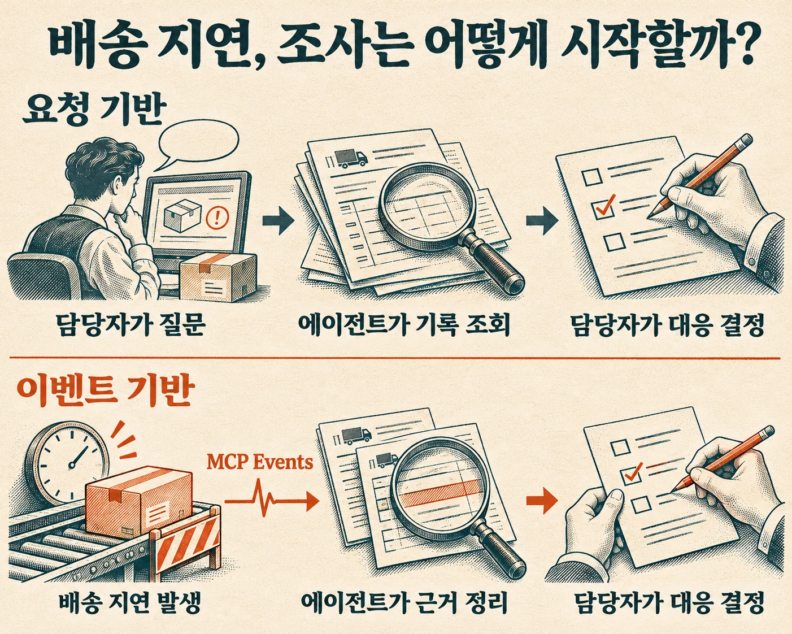
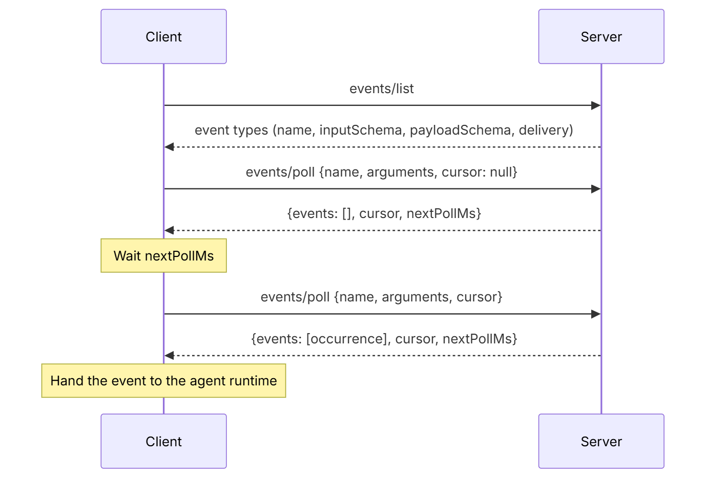
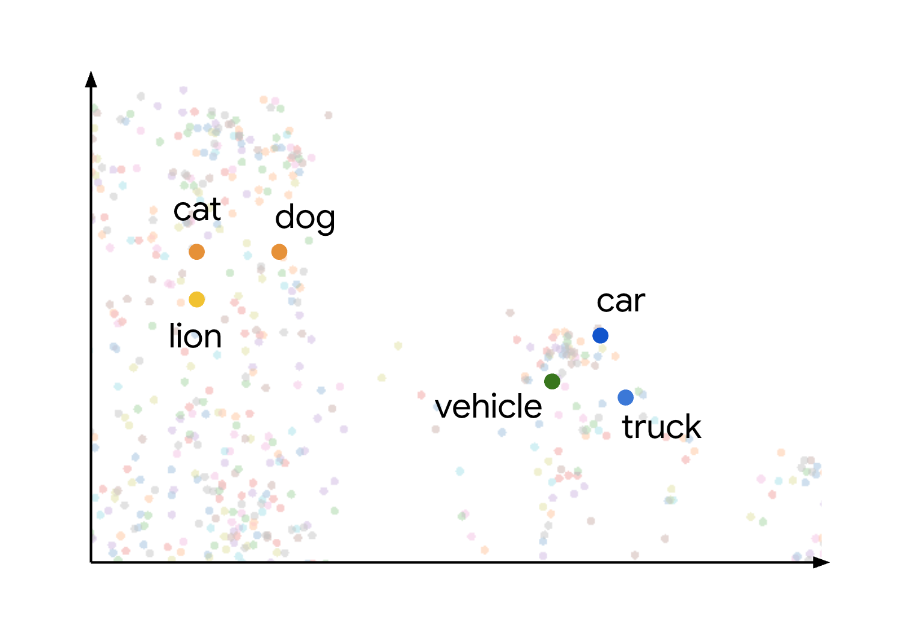

AI NEWS ISSUE 58
Docker Agent, 알림이 오면 작업을 시작한다
Docker 개발팀이 공개한 예제에서 사용자는 에이전트에게 5초 간격으로 메시지를 세 번 받아 달라고 합니다. 두 번째, 세 번째 메시지가 올 때는 다시 말을 걸 필요가 없습니다. 배송 업무에 이 방식을 쓴다면 지연 알림이 올 때마다 에이전트가 해당 주문의 출고 기록을 찾아볼 수 있습니다.
AT A GLANCE
30초 요약
- Docker Agent에 서버 알림을 구독하는 실험 기능이 생겼습니다. 한 번 구독해 두면 서버에 새 소식이 있을 때마다 알림을 받습니다.
- 영국에 출시된 Meta Muse는 상품을 찾아 장바구니에 담고, 결제하기 전에 사용자에게 승인을 받습니다.
- 구글 딥마인드는 쉬운 문제도 조건을 조금 바꾸거나 여러 번 물으면 모델이 틀리는지 살펴보는 시험을 공개했습니다.
- OpenAI가 Agents SDK를 고쳤습니다. 이제 입력 검사에서 요청을 거부하면 실행을 기다리던 도구도 멈춥니다.
- BigQuery가 짧은 문구의 뜻을 비교하는 내장 모델을 정식 출시했습니다. 검색어와 어울리는 상품명을 찾는 데 쓸 수 있습니다.
DOCKER · MCP EVENTS
서버가 먼저 소식을 보내는 방법
이 예제에서 에이전트가 먼저 하는 일은 서버에 연결해 데모 알림을 구독하는 겁니다. 연결을 열어 둔 채 기다리면 서버가 새 메시지를 보냅니다. 이런 방식을 푸시(Push)라고 합니다. 11월 24일에 나온 Docker Agent v1.165.0에서 실험 기능으로 써 볼 수 있습니다. Docker 개발팀의 예제 ↗


서버 알림을 구독할 때 쓰는 규격이 MCP Events입니다. 아직 베타 단계이며, 서버가 알림 종류별로 어떤 전달 방식을 쓸 수 있는지 알려 줍니다. 아래 그림은 폴링(Poll)의 예입니다. 클라이언트가 일정한 간격을 두고 서버에 새 소식이 있는지 물어봅니다.


웹훅(Webhook)에서는 알림을 받을 주소를 미리 등록합니다. 새 소식이 생기면 서버가 그 주소로 알림을 보냅니다. 이번 Docker Agent에서 쓸 수 있는 방식은 셋 중 푸시입니다. 쓰려는 도구 묶음에서 experimental.mcp_events 설정을 켜면 됩니다. Docker 릴리스 ↗ · MCP의 세 전달 방식 ↗
연결이 끊긴 동안 놓친 알림은 어떻게 될까요? MCP Events에는 알림을 구별하는 ID가 있어서 같은 알림이 두 번 와도 알아볼 수 있습니다. 마지막으로 받은 위치를 기억할 때는 커서를 씁니다. 다만 지난 알림을 다시 보내 줄지는 서버와 알림 종류에 따라 다릅니다. 이번 Docker Agent는 커서를 영구 저장하지 않고, 새로 연결해도 이전 구독을 자동으로 복원하지 않습니다. 배송 알림이라면 그사이 빠진 주문이 없는지 주문 기록과 대조해야 합니다. Docker가 밝힌 지원 범위 ↗
META · MUSE
장바구니는 Muse가 채우고, 결제는 사용자가 승인합니다
Meta가 11월 24일 영국에서 개인 에이전트 Muse를 출시했습니다. 18세 이상이면 앱과 웹, WhatsApp에서 쓸 수 있습니다. 쇼핑 파트너로는 Marks & Spencer, ASOS, Currys 등이 참여합니다. 계정을 연결해 늘 사던 물건을 다시 담을 수 있는 곳도 있고, Muse가 직접 웹사이트를 열어 상품을 찾는 곳도 있습니다. Meta에 따르면 구매 전에는 사용자에게 승인을 받습니다. PayPal은 추후 연동할 예정입니다. Meta의 영국 출시 안내 ↗
영국 경쟁시장청(CMA)은 개인 에이전트로 물건을 살 때도 기존 소비자 보호 규칙이 적용된다고 밝혔습니다. Meta는 CMA와 협의해 약관 일부를 고쳤고, CMA는 출시 후에도 서비스를 지켜보기로 했습니다. CMA와 개인정보 감독기관(ICO)은 이용자에게 에이전트가 어떤 정보를 볼 수 있는지, 한 번 허용하면 그 권한이 계속 남는지 확인하라고 권했습니다. 영국 규제기관의 공동 안내 ↗
쇼핑몰을 만든다면 결제 직전에 쿠폰이 만료되는 경우도 생각해야 합니다. 고객은 할인된 금액을 보고 승인했으니, 가격이 오르면 새 금액을 보여 주고 다시 묻는 편이 좋겠습니다.
GOOGLE DEEPMIND · HUMANITY’S FIRST EXAM
간판에 적힌 다섯 단어, 세 번째 글자는 각각 무슨 색일까요?
정답 보기
글자는 차례로 N, I, E, S, A이고, 색은 초록, 노랑, 흰색, 파랑, 파랑입니다.
이 문제는 구글 딥마인드가 11월 24일 공개한 Humanity’s First Exam(HFE)에 실렸습니다. 사람이 답을 확인하기 쉬운 텍스트·이미지 문제 544개로 모델의 기초 능력 20가지를 살핍니다. 한 번 맞힌 문제도 다시 내거나 조건을 조금 바꿔 봅니다. 주문표에서 ‘취소 완료’를 잘 찾아낸 모델이 열 순서를 바꿔도 같은 주문을 짚어 내는지 보는 식입니다.
모델별 성적은 Kaggle에서 볼 수 있습니다. 구글은 현재 모델이 풀지 못하는 일상 속 문제도 12월 15일까지 모집합니다. 구글 딥마인드 발표 ↗ · HFE 리더보드 ↗
OPENAI · AGENTS SDK
주문 취소 요청이 검사에서 막혔을 때
주문을 취소해 달라는 요청이 들어오면 에이전트가 취소 도구를 준비하는 동안 입력 검사(가드레일)도 함께 돌 수 있습니다. OpenAI가 11월 24일 공개한 Python용 Agents SDK v0.26.0부터는 이 검사에서 요청을 거부하면 실행을 기다리던 함수 도구도 멈춥니다. v0.26.0 변경 기록 ↗ · 가드레일 실행 모드 ↗
입력 검사와 에이전트를 함께 실행한 예입니다.
주문을 바꾸기 전에 꼭 검사를 거쳐야 한다면, 입력 검사가 끝난 뒤에 에이전트를 시작하도록 설정할 수 있습니다. 이때 검사에서 거부하면 취소 도구는 아예 호출되지 않습니다. 검사를 통과한 주문이라도 이미 출고됐는지는 취소할 때 주문 서비스에서 확인해야 합니다.
이번 버전에서는 실시간 대화 중 에이전트가 답변 하나를 마칠 때마다 출력도 검사합니다. 다른 에이전트에게 일을 넘기면서 가린 정보는 세션 기록에서도 가려집니다.
GOOGLE CLOUD · BIGQUERY
‘겨울 출근길에 신을 신발’로 ‘방한 부츠’ 찾기
‘방한 부츠’라는 상품명에는 ‘겨울’도 ‘출근길’도 없습니다. 그래도 ‘겨울 출근길에 신을 신발’을 찾는 사람에게 보여 줄 만한 상품입니다. BigQuery에서는 AI.SIMILARITY로 검색어와 상품명의 뜻이 얼마나 가까운지 계산할 수 있습니다. 상품명을 숫자 벡터로 바꿔 두고 싶으면 AI.EMBED를 씁니다. 두 함수에서 쓸 수 있는 내장 모델 embeddinggemma-300m은 4월 미리보기를 거쳐 11월 24일 정식 출시됐습니다. BigQuery 변경 기록 ↗


이 모델은 BigQuery 안에서 실행됩니다. 외부 API를 따로 연결할 필요가 없고, BigQuery 연산 요금이 붙습니다. 텍스트 하나를 768차원 벡터로 바꾸며 최대 2,048토큰까지 입력받지만, 구글은 상품명처럼 128토큰 이하인 짧은 문구에 쓰도록 권합니다. 쇼핑몰에서는 이렇게 후보를 찾은 뒤 고객이 고른 사이즈의 재고가 있는 상품만 추리면 됩니다. BigQuery 한국어 예제 ↗ · 모델 사양과 과금 ↗
OUR VIEW · 헬로우 휴먼의 관점
‘출고 지연’ 알림을 받으면 무엇부터 볼까요?
출고 예정 시각은 지났는데 주문에 출고 기록이 없습니다. 물건이 아직 창고에 있는지, 이미 보냈는데 기록만 늦은 건지는 알림만 보고 알기 어렵습니다. 이런 주문을 맡았다고 가정해 보겠습니다.
- 주문 시스템예정 시각까지 출고 기록이 없으면 어느 주문이 늦었는지 알립니다.
- 에이전트주문 내역과 출고 이력을 모아 어디까지 확인됐고 무엇을 더 알아봐야 하는지 정리합니다.
- 운영 담당자정리된 기록을 보고 출고처에 먼저 확인할지, 고객에게 바로 안내할지 정합니다. 보상 쿠폰을 발급하려면 별도 권한이 필요합니다.
담당자가 처음 보는 메모에 주문 번호와 출고 예정 시각이 함께 있으면, 같은 주문을 다시 검색할 필요 없이 바로 출고처에 물어볼 수 있습니다.
OUR LAB · 모임에서 해볼 실험
밤새 쌓인 배치 기록 100건을 나눠 봅시다
상품과 주문 정보를 밤새 일괄 처리했다고 가정하고 실행 기록 100건을 준비합니다. 모두 모델에 맡길 때와, 규칙으로 걸러 낸 뒤 남은 건만 맡길 때를 비교해 봅시다. 담당자는 원인과 조치 방법을 미리 적어 답안으로 보관합니다. 모델에는 실행 기록과 로그만 읽게 하고, 의심되는 원인, 근거가 된 로그, 사람이 더 확인할 점을 메모 한 장에 담도록 합니다. 배치를 다시 실행할지는 운영자가 정합니다.
| 실행 결과 | 건수 | 처리 방법 |
|---|---|---|
| 정상 완료 | 70 | 완료 기록만 남김 |
| 일시적 연결 실패 | 10 | 오류 코드로 분류하고 기록을 남김 |
| 데이터 불일치 | 10 | 모델이 입력·출력 건수를 로그와 대조 |
| 처리 시간 초과 | 5 | 모델이 지연된 구간을 찾아 기록 |
| 원인 불명 | 5 | 모델이 단서를 모으고 담당자가 확인 |
위 표대로라면 정상 완료 70건과 일시적 연결 실패 10건은 규칙으로 처리하고, 나머지 20건을 모델에 맡깁니다. 아래 숫자는 기록 한 건당 모델을 한 번 호출한다고 가정한 값입니다.
- 모두 맡길 때
- 100건
- 골라서 맡길 때
- 20건
모델에 보내지 않는 기록은 80건(80%)입니다.
같은 기록으로 이번에는 알림을 두 번 보내거나 순서를 바꿔 봅니다. ‘데이터 불일치’ 알림이 두 번 와도 같은 실행에 대한 메모는 하나만 남아야 합니다. 연결이 끊겼을 때 생긴 장애는 원래 실행 기록과 대조해 찾습니다. 기록이 부족해 판단할 수 없는 건은 담당자가 살펴보도록 ‘확인 필요’로 남깁니다.
두 방식에서 놓친 장애와 중복 메모, 불필요한 모델 호출이 각각 몇 건인지 셉니다. 모델이 짚은 원인은 미리 적어 둔 답안과 대조합니다. 장애가 발생한 뒤 메모가 나오기까지 걸린 시간도 잽니다. 비용을 비교할 때는 재시도에 든 금액까지 합쳐 검토를 통과한 메모 수로 나눕니다.
모델의 메모가 사람에게도 도움이 되는지 보려면 같은 장애를 두 사람에게 맡깁니다. 한 사람은 로그부터 읽고, 다른 사람은 모델이 작성한 메모를 보면서 근거를 확인합니다. 목표는 장애를 하나도 놓치지 않고 같은 메모를 두 번 남기는 일도 없이, 사람이 조사에 쓰는 시간을 30% 줄이는 것입니다.
SOURCES